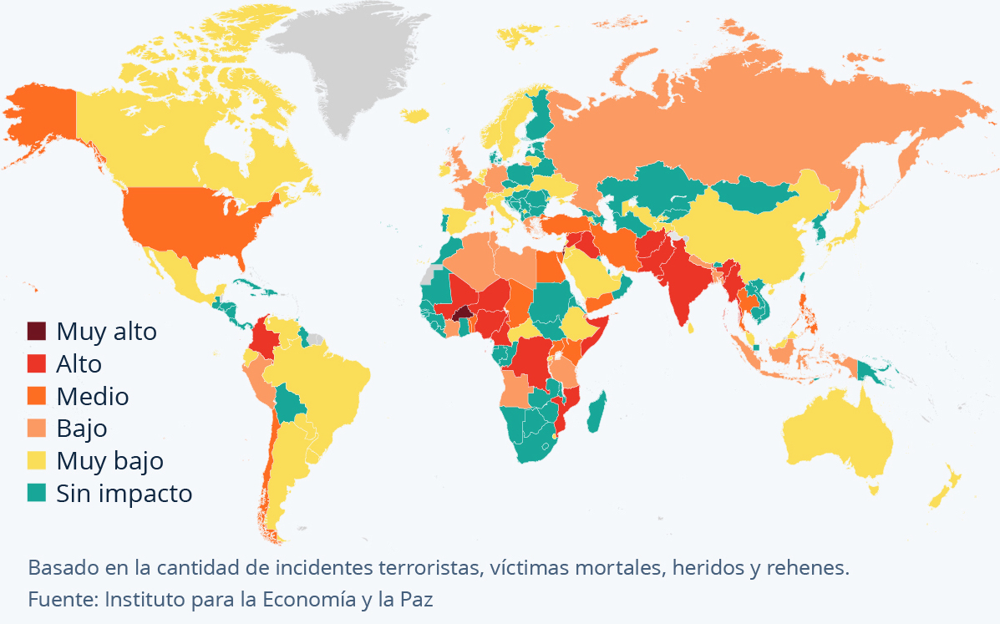
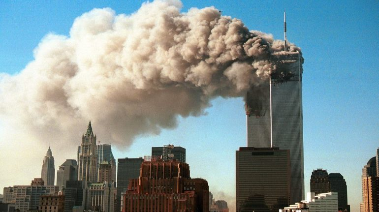
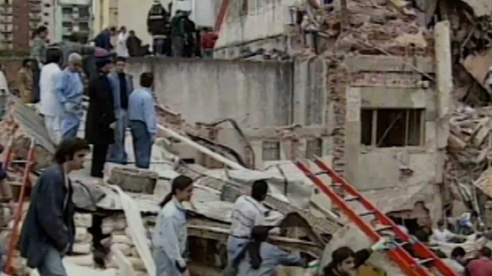
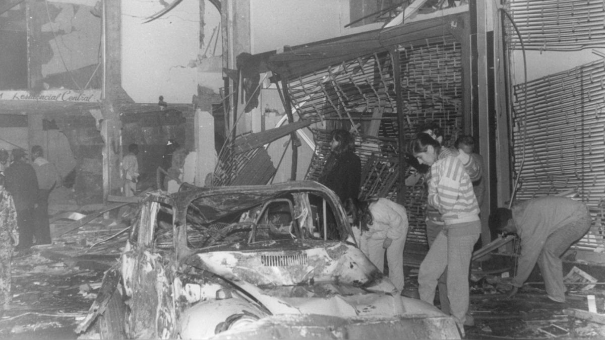

Bienvenidos al Colegio Santa Maria
Aprende de una manera interactiva con nuestros videos y materiales educativos sobre el terrorismo.
Sobre el terrorismo (Problema)
El terrorismo ha evolucionado como una forma de violencia política y social que afecta al mundo entero. Hoy en día, se presenta tanto en conflictos armados como en ataques aislados que buscan generar miedo e inestabilidad. Este informe analiza el terrorismo a nivel global, en Latinoamérica y en Perú, explorando sus causas, impactos y posibles soluciones, destacando los desafíos actuales que enfrenta cada región.
Indagación
El terrorismo es un problema importante por su impacto devastador en la sociedad. Comprender este fenómeno es clave para desarrollar estrategias efectivas de prevención y mitigación. Afecta la seguridad, economía y cohesión social a nivel global, regional y local. En Perú, el legado del terrorismo de décadas pasadas sigue presente, por lo que es crucial analizar su evolución para evitar su resurgimiento y apoyar a las víctimas.

Objetivo
El terrorismo es un problema importante por su impacto devastador en la sociedad. Comprender este fenómeno es clave para desarrollar estrategias efectivas de prevención y mitigación. Afecta la seguridad, economía y cohesión social a nivel global, regional y local. En Perú, el legado del terrorismo de décadas pasadas sigue presente, por lo que es crucial analizar su evolución para evitar su resurgimiento y apoyar a las víctimas.
Objetivos Específicos
Examinar la evolución del terrorismo global, identificando las principales tendencias y patrones del terrorismo a nivel mundial, y analizando la relación entre el terrorismo y los conflictos armados en diferentes regiones.
Analizar las manifestaciones del terrorismo en Latinoamérica, investigando las diversas formas de terrorismo en la región, incluyendo el terrorismo de Estado y el narcoterrorismo, y evaluando el impacto del narcoterrorismo en la seguridad y estabilidad social en países como Colombia y México.
Análisis e Interpretación de la Información
El terrorismo global ha cambiado significativamente en las últimas décadas, con ataques más letales y concentrados en regiones como el Sahel Central en África. El terrorismo actual está estrechamente relacionado con conflictos armados y la inestabilidad política. Según el Índice de Terrorismo Global 2024, más del 90% de los ataques ocurren en zonas de conflicto, lo que resalta la importancia de resolver conflictos para reducir el terrorismo. En Latinoamérica, el terrorismo ha adoptado formas como el narcoterrorismo, afectando gravemente la seguridad. En Perú, aunque el terrorismo ha disminuido, la reconciliación y el apoyo a las víctimas siguen siendo esenciales para evitar su resurgimiento.
Conclusiones
Este resumen destaca que el terrorismo global sigue vinculado a los conflictos armados y la inestabilidad política, con regiones como el Sahel Central en África como epicentro. En Latinoamérica, el terrorismo ha tomado diversas formas, incluyendo el narcoterrorismo, lo que subraya la necesidad de cooperación internacional y el fortalecimiento de las instituciones de seguridad. En Perú, aunque la violencia ha disminuido, remanentes de grupos como Sendero Luminoso continúan activos, lo que resalta la importancia de la reconciliación y el apoyo a las víctimas para evitar un resurgimiento. La solución requiere una respuesta coordinada y sostenida globalmente.
Anexos

Anexo 1: Atentado del 11 de septiembre de 2001 (Estados Unidos)

Anexo 2: Atentado a la AMIA en 1994 (Argentina)

Anexo 3: Atentado en la calle Tarata en 1992 (Perú)
Resumen del Terrorismo del Perú
Presione para ir al video